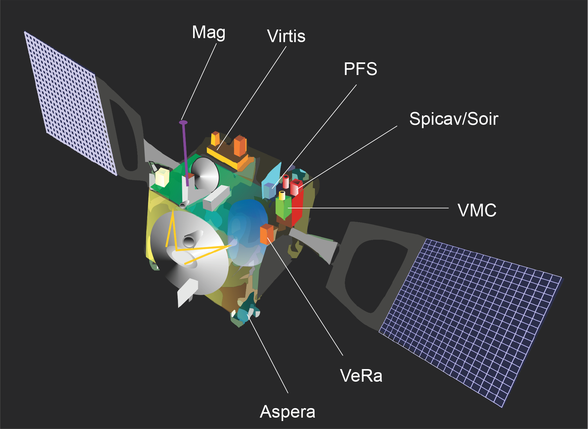
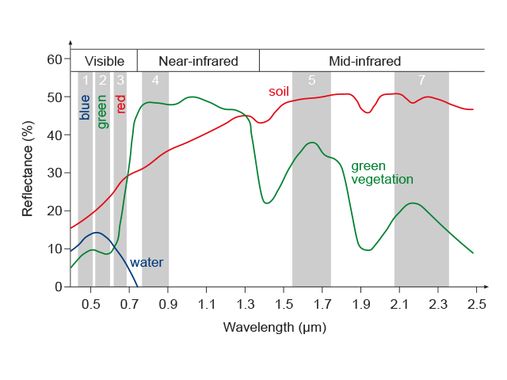

Earth observation data captured by a spectral sensor consists of measurements at one or more bands, or frequency ranges. The size, spacing and number of these bands determine the spectral resolution of the sensor.
A normal camera captures three bands of light frequencies in the visible spectrum. It has a relatively low spectral resolution since it samples a very small range of the available spectrum, and each band is quite wide.
At the other extreme, a hyperspectral sensor captures up to 256 bands across a much wider section of the spectrum and each band is much smaller. It thus has a much higher spectral resolution.
A remote sensing specialist will use the appropriate spectral resolution for their application. In other words, they will choose a sensor that measures the spectra they are interested in, in bands narrow enough to discriminate the phenomenon of interest.

A GIS can generate reflectance or spectral signatures from satellite imagery. Spectral signatures are the specific combination of emitted, reflected or absorbed electromagnetic radiation at varying wavelengths that can uniquely identify an object. Water, soil and vegetation give a different signature as shown below. They can be seen as fingerprints and are used to identify mineral type and the health of plants.
